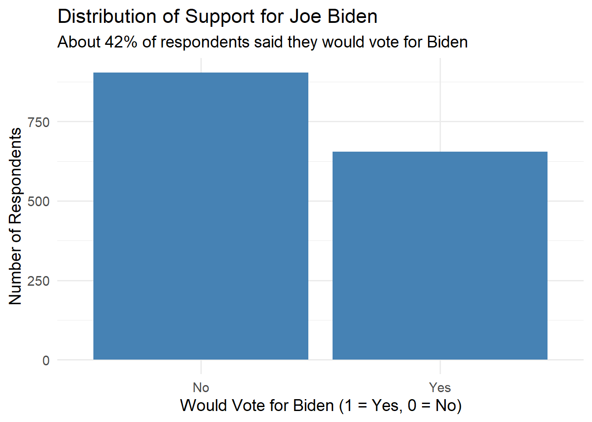
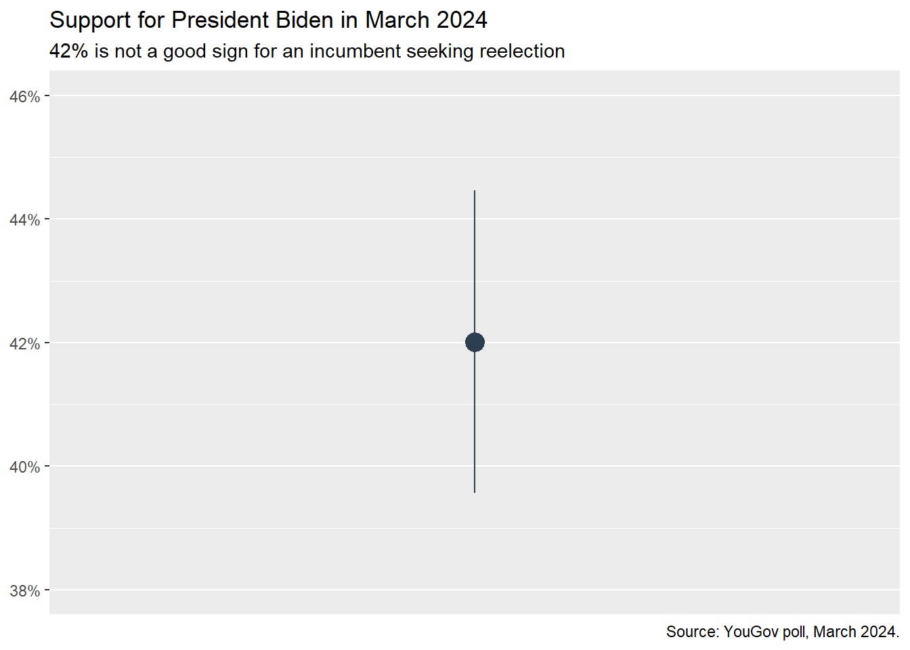

Models
Information
Introduction
This tutorial supports Preceptor’s Primer for Bayesian Data Science: Using the Cardinal Virtues for Inference by David Kane.
The world confronts us. Make decisions we must.
Imagine you are the chair of the Democratic National Committee in early 2024. To allocate resources effectively, you need to estimate Joe Biden’s true level of voter support to decide how much funding to direct to his race versus other key contests.
Exercise 1
What are the four Cardinal Virtues, in order, which we use to guide our data science work?
Why do we ask this, and a score more other questions, in each tutorial? Because the best way to (try to) ensure that students remember these concepts more than a few months after the course ends is spaced repetition, although we focus more on the repetition than on the spacing.
Exercise 2
Create a Github repo called models. Make sure to click the “Add a README file” check box.
Connect the repo to a project on your computer using File -> New Folder from Git .... Make sure to select the “Open in a new window” box.
You need two Positon windows: this one for running the tutorial and the one you just created for writing your code and interacting with the Console.
Select File -> New File -> Quarto Document .... Provide a title – "Biden Polling" – and an author (you). Render the document and save it as analysis.qmd.
Create a .gitignore file with analysis_files on the first line and then a blank line. Save and push.
In the Console, run:
show_file(".gitignore")If that fails, it is probably because you have not yet loaded library(tutorial.helpers) in the Console.
CP/CR.
Professionals keep their data science work in the cloud because laptops fail.
Exercise 3
In your QMD, load the tidyverse package in a new code chunk. Render the file.
Notice that the file does not look good because the code is visible and there are annoying messages. To take care of this, add #| message: false to remove all the messages in this setup chunk. Also add the following to the YAML header to remove all code echos from the HTML:
execute:
echo: falseIn the Console, run:
show_file("analysis.qmd", start = -5)CP/CR.
Render again. Everything looks nice, albeit empty, because we have added code to make the file look better and more professional.
Exercise 4
Place your cursor in the QMD file on the library(tidyverse) line. Use Cmd/Ctrl + Enter to execute that line.
Note that this causes library(tidyverse) to be copied down to the Console and then executed.
CP/CR.
Exercise 5
Copy/paste this code into your setup code chunk in your QMD.
poll_data <- tibble(biden = as.factor(c(rep("Yes", 655),
rep("No", 904)))) |>
slice_sample(prop = 1)Place your cursor in the QMD file next to poll_data. Use Cmd/Ctrl + Enter to execute. It will automatically execute all three lines.
This work flow — writing things in the QMD so that you have a permanent copy and then executing them in the Console with Cmd/Ctrl + Enter — is the most common approach to data science.
There is QMD World and Console World. It is your responsibility to keep them in sync.
CP/CR.
The polling data comes from a YouGov survey of 1,559 U.S. adult citizens conducted March 10-12, 2024. The tibble poll_data, which has also been loaded up in the workspace of this tutorial, contains that data.
Wisdom
Wonder is the beginning of wisdom. - Socrates
With this project, we’re not trying to predict every detail about the 2024 election. That would be impossible. Instead, we’re focusing on a question that we can actually begin to answer: what proportion of all votes will be cast for Joe Biden?
The general question we are interested in is the future results of the 2024 election, as seen from a survey conducted March of 2024.
Our question:
What proportion of all votes will be cast for Joe Biden in the 2024 election?
Exercise 1
In your own words, describe the key components of Wisdom when working on a data science problem.
The combination of some data and an aching desire for an answer does not ensure that a reasonable answer can be extracted from a given body of data. – John W. Tukey
Exercise 2
Run glimpse(poll_data).
glimpse(poll_data)For this poll, the specific question asked was:
“If an election for president were going to be held now and the Democratic nominee was Joe Biden and the Republican nominee was Donald Trump, would you vote for…”
For our analysis, we focus only on whether respondents indicated they would vote for Biden (coded as “Yes”) or not (coded as “No”).
Exercise 3
Which variable in poll_data should we use as our outcome variable? (A trick question since there is only one variable!)
We will use biden as our outcome variable.

Exercise 4
Let’s imagine a brand new variable which does not exists in the data. This variable should be binary, meaning that it only takes on one of two values. It should also, at least in theory, be manipulable. In other words, if the value of the variable is “3,” or whatever, then it generates one potential outcome and if it is “9,” or whatever, it generates another potential outcome.
Describe this imaginary variable and how might we manipulate its value.
Any dataset can be used to construct a causal model as long as there is at least one covariate that we can, at least in theory, manipulate. It does not matter whether or not anyone did, in fact, manipulate it.
Exercise 5
Given our (imaginary) treatment variable trump_ad, how many potential outcomes are there for each unit? Explain why.
The same dataset can be used to create, separately, lots and lots of different models, both causal and predictive. We can just use different outcome variables and/or specify different treatment variables. This is a conceptual framework we apply to the data. It is never inherent in the data itself.
Exercise 6
In a few sentences, specify the two different values for the imaginary treatment variable trump_ad, for a single unit, guess at the potential outcomes which would result, and then determine the causal effect for that unit given those guesses.
A causal effect is defined as the difference between two potential outcomes. Keep two things in mind.
First, difference does not necessarily mean subtraction. Many potential outcome are not numbers. For example, it makes no sense to subtract a potential outcome, like who you would vote for if you saw a Facebook ad, from another potential outcome, like who you vote for if you did not see the ad.
Second, even in the case of numeric outcomes, you can’t simply say the effect is 10 without specifying the order of subtraction. There is, perhaps, a default sense in which the causal effect is defined as potential outcome under treatment minus potential outcome under control.
Exercise 7
Let’s consider a predictive model. Which variable, even if it is not in poll_data, do you think might have an important connection to biden?
With a predictive model, there is only one outcome for each individual unit. There are not two potential outcomes because we are not considering any of the covariates to be a treatment variable. We assuming that the values of all covariates are “fixed.”
There are no “treatments” in predictive models. There are only covariates.
Exercise 8
Specify two different groups of voters which have different values for age and which might have different average values for the biden outcome.
In predictive models, do not use words like “cause,” “influence,” “impact,” or anything else which suggests causation. The best phrasing is in terms of “differences” between groups of units with different values for a covariate of interest.
Exercise 9
Define a Preceptor Table.
The Preceptor Table does not include all the covariates which you will eventually include in your model. It only includes covariates which you need to answer your question.
Exercise 10
Describe the key components of Preceptor Tables in general, without worrying about this specific problem. Use words like “units,” “covariates,” and “outcomes.”
This problem is predictive so there is only one outcome.
Exercise 11
What are the units for this problem?
Specifying the Preceptor Table forces us to think clearly about the units and outcomes implied by the question. The resulting discussion sometimes leads us to modify the question with which we started. No data science project follows a single direction. We always backtrack. There is always dialogue.
We model units, but we only really care about aggregates.
Exercise 12
What is the outcome variable for this problem?
Looking at the question, having the outcome as “the candidate for whom the vote was cast” (or something similar) is too broad. We don’t actually need to know the name of the candidate. We just need to know if the vote was cast for Biden or not. The name of the candidate, if it was not Biden, is irrelevant to our question. So, we can represent the outcome as ‘No’ (did not vote for Biden) and ‘Yes’ (did vote for Biden).
Exercise 13
What is a covariate which you think might be useful for this problem, regardless of whether or not it might be included in the data?
The term “covariates” is used in at least three ways in data science. First, it is all the variables which might be useful, regardless of whether or not we have the data. Second, it is all the variables for which we have data. Third, it is the set of variables in the data which we end up using in the model.
Exercise 14
What are the treatments, if any, for this problem?
Remember that a treatment is just another covariate which, for the purposes of this specific problem, we are assuming can be manipulated, thereby, creating two or more different potential outcomes for each unit.
Exercise 15
What moment in time does the Preceptor Table refer to?
You can never look at the data too much. – Mark Engerman
Exercise 16
Define a causal effect. (Note that the model in this tutorial is predictive, not causal. We just want to make sure you understand what a causal model is.)
According to the Rubin Causal Model, there must be two (or more) potential outcomes for any discussion of causation to make sense. This is simplest to discuss when the treatment only has two different values, thereby generating only two potential outcomes.
Exercise 17
What is the fundamental problem of causal inference?
If the treatment variable is continuous (like income), then there are lots and lots of potential outcomes, one for each possible value of the treatment variable.
Exercise 18
How does the motto “No causation without manipulation” apply in this problem?
Always consider if issues like manipulation and causation apply to both your Preceptor Table and your actual data.
Exercise 19
Describe in words the Preceptor Table for this problem.
The Preceptor Table for this problem looks something like this:
| Preceptor Table | |
|---|---|
| Voter ID |
Outcome
|
| Voted for Biden | |
| 1 | 0 |
| 2 | 0 |
| … | … |
| 10 | 1 |
| 11 | 0 |
| … | … |
| 1,559 | 1 |
Like all aspects of a data science problem, the Preceptor Table evolves as we continue our work.
Exercise 20
Over the course of this tutorial, we will be creating a summary paragraph. The purpose of this exercise is to write the first two sentences of that paragraph.
The first sentence is a general statement about the overall topic, mentioning both the general class of the outcome variable and of at least one of the covariates. It is not connected to the initial “Imagine that you are XX” which set the stage for this project. That sentence can be rhetorical. It can be trite, or even a platitude. The purpose of the sentence to let the reader know, gently, about our topic.
The second sentence does two things. First, it introduces the data source. Second, it introduces the specific question. The sentence can’t be that long. Important aspects of the data include when/where it was gather, how many observations it includes and the organization (if famous) which collected it.
Type your two sentences below.
Read our answer. It will not be the same as yours. You can, if you want, change your answer to incorporate some of our ideas. Do not copy/paste our answer exactly. Add your two sentences, edited or otherwise, to your QMD, Command/Ctrl + Shift + K, and then commit/push.
Justice
Justice is truth in action. - Benjamin Disraeli
Exercise 1
In your own words, name the five key components of Justice when working on a data science problem.
Justice is about concerns that you (or your critics) might have, reasons why the model you create might not work as well as you hope.
Exercise 2
In your own words, define “validity” as we use the term.
Validity is always about the columns in the Preceptor Table and the data. Just because columns from these two different tables have the same name does not mean that they are the same thing.
Exercise 3
Provide one reason why the assumption of validity might not hold for the outcome (Biden support). Use the words “column” or “columns” in your answer.
In order to consider the Preceptor Table and the data to be drawn from the same population, the columns from one must have a valid correspondence with the columns in the other. Validity, if true (or at least reasonable), allows us to construct the Population Table, which is the first step in Justice.
Because we control the Preceptor Table and, to a lesser extent, the original question, we can adjust those variables to be “closer” to the data that we actually have. This is another example of the iterative nature of data science. If the data is not close enough to the question, then we check with our boss/colleague/customer to see if we can modify the question in order to make the match between the data and the Preceptor Table close enough for validity to hold.
Despite these potential problems, we will assume that validity holds since it, mostly (?), does.
Exercise 4
In your own words, define a Population Table.
The Population Table is almost always much bigger than the combination of the Preceptor Table and the data because, if we can really assume that both the Preceptor Table and the data are part of the same population, than that population must cover a broad universe of time and units since the Preceptor Table and the data are, themselves, often far apart from each other.
| Source | Time | ID | Biden |
|---|---|---|---|
| … | February 2024 | 1 | ? |
| … | February 2024 | 200 | ? |
| … | February 2024 | 976 | ? |
| … | … | … | … |
| Data | March 2024 | 1 | 0 |
| Data | March 2024 | 200 | 1 |
| Data | March 2024 | … | … |
| Data | March 2024 | 1559 | 1 |
| … | … | … | … |
| … | October 2024 | 1 | ? |
| … | October 2024 | 200 | ? |
| … | October 2024 | 2025 | ? |
| … | … | … | … |
| Preceptor Table | November 2024 | 1 | 1 |
| Preceptor Table | November 2024 | 200 | 0 |
| Preceptor Table | November 2024 | 2078 | 1 |
| … | … | … | … |
| … | December 2024 | 1 | ? |
| … | December 2024 | 200 | ? |
| … | December 2024 | 2300 | ? |
Exercise 5
In your own words, define the assumption of “stability” when employed in the context of data science.
Stability is all about time. Is the relationship among the columns in the Population Table stable over time? In particular, is the relationship — which is another way of saying “mathematical formula” — at the time the data was gathered the same as the relationship at the (generally later) time referenced by the Preceptor Table.
Exercise 6
Provide one reason why the assumption of stability might not be true in this case.
Stability is about the parameters: \(\beta_0\), \(\beta_1\) and so on. Stability means these parameters are the same in the data as they are in the population as they are in the Preceptor Table.
Exercise 7
We use our data to make inferences about the overall population. We use information about the population to make inferences about the Preceptor Table: Data -> Population -> Preceptor Table. In your own words, define the assumption of “representativeness” when employed in the context of data science.
Ideally, we would like both the Preceptor Table and our data to be random samples from the population. Sadly, this is almost never the case.
Exercise 8
We do not use the data, directly, to estimate missing values in the Preceptor Table. Instead, we use the data to learn about the overall population. Provide one reason, involving the relationship between the data and the population, for why the assumption of representativeness might not be true in this case.
The reason that representativeness is important is because, when it is violated, the estimates for the model parameters might be biased.
Exercise 9
We use information about the population to make inferences about the Preceptor Table. Provide one reason, involving the relationship between the population and the Preceptor Table, for why the assumption of representativeness might not be true in this case.
Stability looks across time periods. Representativeness looks within time periods, for the most part.
Exercise 10
In your own words, define the assumption of “unconfoundedness” in the context of data science.
This assumption is only relevant for causal models. We describe a model as “confounded” if this is not true. The easiest way to ensure unconfoundedness is to assign treatment randomly.
Exercise 11
A statistical model consists of two parts: the probability family and the link function. The probability family is the probability distribution which generates the randomness in our data. The link function is the mathematical formula which links our data to the unknown parameters in the probability distribution.
Add library(tidymodels) to the QMD file.
Place your cursor in the QMD file on the library(tidymodels) line. Use Cmd/Ctrl + Enter to execute that line.
Note that this causes library(tidymodels) to be copied down to the Console and then executed.
CP/CR.
The probability family is determined by the outcome variable \(Y\).
Since \(Y\) is a binary variable (with exactly two possible values), the probability family is Bernoulli.
\[Y \sim \text{Bernoulli}(\rho)\]
where \(\rho\) is the probability that one of the two possible values — conventionally referred to as 1 or TRUE — occurs. By definition, \(1 - \rho\) is the probability of the other value.
Exercise 12
Add library(broom) to the QMD file.
Place your cursor in the QMD file on the library(broom) line. Use Cmd/Ctrl + Enter to execute that line.
Note that this causes library(broom) to be copied down to the Console and then executed.
CP/CR.
The link function, the basic mathematical structure of the model, is (mostly) determined by the type of outcome variable.
For a binary outcome variable, we use a log-odds model:
\[ \log\left[ \frac { \rho }{ 1 - \rho } \right] = \beta_0 + \beta_1 X_1 + \beta_2 X_2 + \ldots \]
Exercise 13
Use AI to come up with a \(\LaTeX\) representation of the mathematical structure of the model, with \(Y\) as the dependent variable and \(X_1\), \(X_2\) and so on as the independent variables. This version will not have the values of any parameters since we have not, yet, estimated them. Confirm that the \(\LaTeX\) code works by placing it in your QMD and then rendering. Paste that \(\LaTeX\) code below.
No worries if you have trouble with this question!
Our answer:
\[P(Y = 1) = \frac{1}{1 + e^{-(\beta_0 + \beta_1 X_1 + \beta_2 X_2 + \cdots + \beta_n X_n)}}\]
with \(Y \sim \text{Bernoulli}(\rho)\) where \(\rho\) is the probability above.
Which we created with \(\LaTeX\) code that looks like this:
$$P(Y = 1) = \frac{1}{1 + e^{-(\beta_0 + \beta_1 X_1 + \beta_2 X_2 + \cdots + \beta_n X_n)}}$$
with $Y \sim \text{Bernoulli}(\rho)$ where $\rho$ is the probability above.This follows the logistic regression form for binary data, where the \(\beta\) coefficients represent the effect of predictors on the log-odds of the outcome.
We use generic variables — \(Y\), \(X_1\) and so on — because our purpose is to describe the general mathematical structure of the model, independent of the specific variables we will eventually choose to use.
Having decided on the basic mathematical structure of the model, a choice mostly driven by the distribution of our outcome variable, we now turn toward estimating the model.
Exercise 14
Write one sentence which highlights a potential weakness in your model. This will almost always be derived from possible problems with the assumptions discussed above. We will add this sentence to our summary paragraph. So far, our version of the summary paragraph looks like this:
Public opinion polls provide crucial but imperfect snapshots of voter sentiment during campaigns. Using March 2024 YouGov survey data from 1,559 U.S. adults, we estimate the proportion of votes Joe Biden will receive in the November election.
Of course, your version will be somewhat different.
Add a weakness sentence to the summary paragraph in your QMD. You can modify your paragraph as you see fit, but do not copy/paste our answer exactly. Command/Ctrl + Shift + K, and then commit/push.
Courage
Courage is found in unlikely places. - J.R.R. Tolkien
Exercise 1
In your own words, describe the components of the virtue of Courage for analyzing data.
Having decided on the basic mathematical structure of the model at the end of Justice, a choice mostly driven by the distribution of our outcome variable, we now turn toward estimating the model.
Exercise 2
Because our outcome variable is binary, start to create the model by entering logistic_reg().
logistic_reg()The default engine for logistic_reg() is "glm". Since this is what we want, we don’t need to specify it.
The tidymodels framework is the most popular one in the R world for estimating models. Tidy Modeling with R by Max Kuhn and Julia Silge is a great introduction.
Exercise 3
We want to fit a model with a single categorical predictor. We’ll use biden, which contains “Yes”/“No” responses, and fit a logistic regression model with it as the outcome variable.
Continue the pipe to fit(biden ~ 1, data = poll_data).
logistic_reg() |>
fit(..., data = ...)Note that, if biden were not a factor, this would generate an error. The “glm” engine requires that the outcome variable be a factor.
Exercise 4
Continue the pipe with tidy(conf.int = TRUE).
...
tidy(conf.int = TRUE)In a logistic regression model, the intercept (\(\beta_0\)) represents the log-odds of voting for Biden when all predictor variables are 0. The slope (\(\beta_1\)) shows how those log-odds change when the predictor increases by 1 unit.
Exercise 5
Behind the scenes, we’ve created an object called fit_biden that stores the model you just fit. Type fit_biden and hit “Run Code” to view the results.
fit...In data science, we deal with words, math, and code, but the most important of these is code. We created the mathematical structure of the model and then wrote a model formula in order to estimate the unknown parameters.
Exercise 6
In the Console, load the easystats package. CP/CR.
We don’t add easystats to the QMD because we are only using it for an interactive check of our fitted model. However, the easystats ecosystem has a variety of interesting functions and packages which you might want to explore.
Exercise 7
In the Console, run check_predictions(extract_fit_engine(fit_biden)). CP/CR.
The purpose of check_predictions() is to compare your actual data (in green) with data that has been simulated from your fitted model, i.e., from your data generating mechanism. If your DGM is reasonable, then data simulated from it should not look too dissimilar from your actual data. Of course, it won’t look exactly the same because of randomness, both in the world and in your simulation. But the actual data should be within the range of outcomes that your DGM simulates with check_predictions().
The model uses only an intercept, so it predicts the same probability of Biden support for everyone—just the overall average.
Exercise 8
Ask AI to create \(\LaTeX\) code for this model, including our variable names and estimates for all the coefficients. Because this is a fitted model, the dependent variable will have a “hat” and the formula will not include an error term.
Add the code to your QMD. Cmd/Ctrl + Shift + K.
Make sure the resulting display looks good. For example, you don’t want an absurd number of figures to the right of the decimal. If the model is too long, you will need to spread it across several lines. You may need to go back-and-forth with the AI a few times.
Once the \(\LaTeX\) code looks good, paste it below.
Our formula looks like:
\[ \log\left( \frac{\widehat{p}}{1 - \widehat{p}} \right) = -0.32 \]
It was created with:
\widehat{p} = \frac{1}{1 + e^{-(-0.32)}} \approx 0.42Note the differences. First, we have replaced the parameters with our best estimate from the model. Second, we have dropped the error term because this is a formula for predicting the value of our outcome variable. Third, the left-hand side variable is \(\widehat{p}\) instead of \(p\) or biden because this formula generates the estimated percentage of people who support Biden. The “hat” indicates an estimated value. The symbol \(\approx 0.42\) means the calculated value is approximately equal to 0.42, or 42%.
This is our data generating mechanism.
A data generating mechanism is just a formula, something which we can write down and implement with computer code.
Exercise 9
Create a new code chunk in your QMD. Add a code chunk option: #| cache: true. Copy/paste the code from above for estimating the model into the code chunk, assigning the result to fit_biden.
fit_biden <- logistic_reg() |>
fit(biden ~ 1, data = poll_data)This includes the call to fit() but not the call to tidy() because we want the entire fitted model, not just a table of the estimated parameter values.
Command/Ctrl + Shift + K. By including #| cache: true you cause Quarto to cache the results of the chunk. The next time you render your QMD, as long as you have not changed the code, Quarto will just load up the saved fitted object.
At the Console, run:
tutorial.helpers::show_file("analysis.qmd", chunk = "Last")CP/CR.
To confirm, Command/Ctrl + Shift + K again. It should be quick.
Exercise 10
Add *_cache to .gitignore file. Cached objects are often large. They don’t belong on Github.
At the Console, run:
tutorial.helpers::show_file(".gitignore")CP/CR.
Because of the change in your .gitignore (assuming that you saved it), the cache directory should not appear in the Source Control panel because Git is ignoring it, as instructed. Commit and push.
Exercise 11
In the Console, run tidy() on fit_biden with the argument conf.int set equal to TRUE. The returns 95% intervals for all the parameters in our model.
tidy(..., conf.int = ...)tidy() is part of the broom package, used to summarize information from a wide variety of models.
Exercise 12
Create a new code chunk in your QMD. Ask AI to help you make a nice looking table from the tibble which is returned by tidy(). You don’t have to include all the variables which tidy() produces. We often just show the estimate and the confidence intervals.
Insert that code into the QMD.
Command/Ctrl + Shift + K.
Make sure it works. You might need to add some new libraries, e.g., tinytable, knitr, gt, kableExtra, flextable, modelsummary, et cetera, to the setup code chunk, if you use any functions from these packages, all of which have strengths and weaknesses for making tables.
At the Console, run:
tutorial.helpers::show_file("analysis.qmd", chunk = "Last")CP/CR.
Here is ours, along with the code:
| term | estimate | conf.low | conf.high |
|---|---|---|---|
| (Intercept) | -0.3221941 | -0.4230548 | -0.2218729 |
library(knitr)
tidy(fit_biden, conf.int = TRUE) |>
select(term, estimate, conf.low, conf.high) |>
kable(
caption = "Estimates and 95% Confidence Intervals for Intercept\nSource: March 2024 YouGov Poll "
)At the very least, your table should include a title and a caption with the data source. The more you use AI, the better you will get at making tables.
Exercise 13
Add a sentence to your project summary.
Explain the structure of the model. Something like: “I/we model XX [the concept of the outcome, not the variable name], [insert description of values of XX], as a [linear/logistic/multinomial/ordinal] function of XX [and maybe other covariates].”
Recall the beginning of our version of the summary:
Public opinion polls provide crucial but imperfect snapshots of voter sentiment during campaigns. Using March 2024 YouGov survey data from 1,559 U.S. adults, we estimate the proportion of votes Joe Biden will receive in the November election. Our estimates may be biased if late-deciding voters break differently for Biden than survey respondents who expressed firm preferences in March.
Read our answer. It will not be the same as yours. You can, if you want, change your answer to incorporate some of our ideas. Do not copy/paste our answer exactly. Add your two sentences, edited or otherwise, to the summary paragraph portion of your QMD. Command/Ctrl + Shift + K, and then commit/push.
Temperance
Temperance is a tree which as for its root very little contentment, and for its fruit calm and peace. - Buddha
Exercise 1
In your own words, describe the use of Temperance in data science.
Courage gave us the data generating mechanism. Temperance guides us in the use of the DGM — or the “model” — we have created to answer the question(s) with which we began. We create posteriors for the quantities of interest.
Exercise 2
Before using the DGM, we should make sure that we can interpret it.
Recall the values for the parameters in our data generating mechanism:
# A tibble: 1 × 4
term estimate conf.low conf.high
<chr> <dbl> <dbl> <dbl>
1 (Intercept) -0.322 -0.423 -0.222Interpret the -0.32 value for the estimate of the (Intercept).
Most of the time parameters in a model have no direct relationship with any population value in which we might be interested. This is especially true in complex and/or non-linear models. That is, in those cases, a coefficient like \(\beta_0\) does not “mean” anything. But, in simple, small, linear models, it sometimes happens that a parameter does correspond to something real.
Exercise 3
# A tibble: 1 × 4
term estimate conf.low conf.high
<chr> <dbl> <dbl> <dbl>
1 (Intercept) -0.322 -0.423 -0.222Interpret the -0.42 value for the conf.low of the (Intercept).
We look for two things in the confidence interval. First, does it exclude zero? If not, then we can’t be sure if the relationship is positive or negative. Second, does it overlap with the confidence intervals for other dummy columns derived from this variable? If so, then we can’t be sure that the ordering as to which comparisons are bigger.
Exercise 4
# A tibble: 1 × 4
term estimate conf.low conf.high
<chr> <dbl> <dbl> <dbl>
1 (Intercept) -0.322 -0.423 -0.222Interpret the -0.22 value for the conf.high of the (Intercept).
The interpretation of a treatment variable is very different from the interpretation of a standard covariate. The key point is that there is no such thing as a causal (versus predictive) data set nor a causal (versus predictive) R code formula. You can use the same data set (and the same R code!) for both causal and predictive models. The difference lies in the assumptions you make.
Exercise 5
In the end, we don’t really care about parameters, much less how to interpret them. Parameters are imaginary, like unicorns. We care about answers to our questions. Parameters are tools for answering questions. They aren’t interesting in-and-of themselves. In the modern world, all parameters are nuisance parameters.
Add library(marginaleffects) to the QMD file.
Place your cursor in the QMD file on the library(marginaleffects) line. Use Cmd/Ctrl + Enter to execute that line.
Note that this causes library(marginaleffects) to be copied down to the Console and then executed.
CP/CR.
We should be modest in the claims we make. The posteriors we create are never the “truth.” The assumptions we made to create the model are never perfect. Yet decisions made with flawed posteriors are almost always better than decisions made without them.
Exercise 6
What is the general topic we are investigating? What is the specific question we are trying to answer?
Data science projects begin with a decision which we face. To make that decision wisely, we would like to have good estimates of many unknown numbers. Yet, in order to make progress, we need to drill down to one specific question. This leads to the creation of a data generating mechanism, which can now be used to answer lots of questions, thus allowing us to explore the original decision more broadly.
Exercise 7
In the Console, run predictions() on fit_biden with type = "prob".
type = "prob" is required because fit_biden is a logistic model so the outputs are probabilities.
CP/CR.
predictions() returns a data frame with one row for each observation in the dataset used to fit the model. In this case, because there are about 1560 responses in the sample and two possible outcomes (yes and no), the result has about 3120 rows – two for each voter. For an intercept-only logistic regression, these probabilities are the same for every observation, but split across the two outcome groups.
Exercise 8
In the Console, run plot_predictions() on fit_biden with type = "prob" and condition = "group".
condition = "group" shows us the Yes’s and the No’s separately.
CP/CR.
This plot shows predicted support for Biden by group, but it’s not very informative. Since the model only includes group, the bars just reflect the estimated support within each group. Showing both is redundant because one is just 1 minus the other.
Exercise 9
In the Console, run avg_predictions() on fit_biden with type = "prob".
CP/CR.
avg_predictions() does what you might expect, taking the average of each prediction within the two different groups. In this case, that calculation is trivial since the predictions within each group are identical. In more complex models, they won’t be.
Exercise 10
Work interactively within your QMD to create a plot which looks something like this:

Use AI to help. Your plot does not have to look exactly like ours.
Note that this plot takes the output of avg_predictions(fit_biden, type = "prob"), filters out just the row for group == "Yes" and then pipes to ggplot(), using geom_pointrange().
Copy the code for your plot here:
Our code:
avg_predictions(fit_biden, type = "prob") |>
filter(group == "Yes") |>
ggplot(aes(x = group,
y = estimate,
ymin = conf.low,
ymax = conf.high)) +
geom_pointrange(color = "#2C3E50", size = 1.0,) +
labs(
title = "Support for President Biden in March 2024",
subtitle = "42% is not a good sign for an incumbent seeking reelection",
caption = "Source: YouGov poll, March 2024.",
y = NULL,
x = NULL
) +
scale_x_discrete(labels = NULL, breaks = NULL) +
scale_y_continuous(
labels = scales::percent_format(accuracy = 1),
limits = c(0.38, 0.46)
) Data science often involves this-back-and-forth style of work. First, we need to make a single chunk of code, in this case, a new plot, work well. This requires interactive work between the QMD and the Console. Second, we need to ensure that the entire QMD runs correctly on its own.
Exercise 11
Finalize the new graphics code chunk in your QMD.
Command/Ctrl + Shift + K to ensure that it all works as intended.
At the Console, run:
tutorial.helpers::show_file("analysis.qmd", chunk = "Last")CP/CR.
The model assumes everyone has the same probability of supporting Biden. It’s overly simple, so we must be humble about its limits.
Exercise 12
Write the last sentence of your summary paragraph. It describes at least one quantity of interest (QoI) and provides a measure of uncertainty about that QoI. (It is OK if this QoI is not the one that you began with. The focus of a data science project often changes over time.)
Add a final sentence to your summary paragraph in your QMD as you see fit, but do not copy/paste our answer exactly. Command/Ctrl + Shift + K.
Exercise 13
Write a few sentences which explain why the estimates for the quantities of interest, and the uncertainty thereof, might be wrong. Suggest an alternative estimate and confidence interval, if you think either might be warranted.
Always go back to your Preceptor Table, the information which, if you had it, would make answering your question easy. In almost all real world cases, the Preceptor Table and the data are fairly different, not least because validity never holds perfectly. So, even a perfectly estimated statistical model is rarely as useful as we might like.
Exercise 14
Rearrange the material in your QMD so that the order is graphic, followed by the paragraph. Doing so, of course, requires sensible judgment. For example, the code chunk which creates the fitted model must occur before the chunk which creates the graphic. You can keep or discard the math and any other material at your own discretion.
Command/Ctrl + Shift + K to ensure that everything works.
At the Console, run:
tutorial.helpers::show_file("analysis.qmd")CP/CR.
This is the version of your QMD file which your teacher is most likely to take a close look at.
Exercise 15
Publish your rendered QMD to GitHub Pages. Copy/paste the resulting url below.
Commit/push everything.
Exercise 16
Copy/paste the url to your Github repo.
We can never know all the entries in the Preceptor Table. That knowledge is reserved for God. If all our assumptions are correct, then our DGM is true, it accurately describes the way in which the world works. There is no better way to predict the future, or to model the past, than to use it. Sadly, this will only be the case with toy examples involving things like coins and dice. We hope that our DGM is close to the true DGM but, since our assumptions are never perfectly correct, our DGM will always be different. The estimated magnitude and importance of that difference is a matter of judgment.
The world confronts us. Make decisions we must.
Summary
This tutorial covered Chapter 4: Models of Preceptor’s Primer for Bayesian Data Science: Using the Cardinal Virtues for Inference by David Kane.
Download answers
- Click the button to download a file containing your answers.
- Save the file onto your computer in a convenient location.
(If no file seems to download, try clicking with the alternative button on the download button and choose "Save link as...")